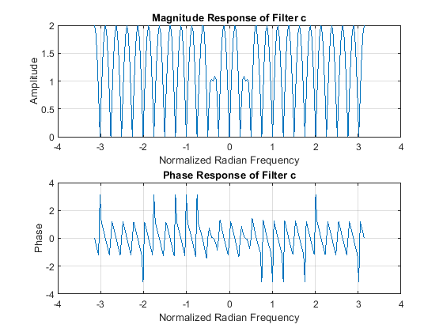

Contents
- QUESTION 1 COMMENTING
- QUESTION 2 FREQUENCY FILTERING
- 2(a) FILL IN CODE
- 2(b) PLOT FREQUENCY RESPONSE
- 2(c) EVALUATE FREQUENCY RESPONSE FOR CERTAIN FREQUENCIES
- 2(d) COMPUTE AND PLOT OUTPUT
- 2(e) PLOT OUTPUTS
- 2(f) ANSWER QUESTION
- QUESTION 3
- 3(a) PLOT FREQUENCY RESPONSE
- 3(b) APPLY FILTER
- 3(c) PLOT FREQUENCY RESPONSE
- 3(d) APPLY FILTER
- 3(e) PLOT FREQUENCY RESPONSE
- 3(f) APPLY FILTER
- 3(g) ANSWER QUESTION
- ALL FUNCTIONS SUPPORTING THIS CODE %%
QUESTION 1 COMMENTING
% DO NOT REMOVE THE LINE BELOW % MAKE SURE 'eel3135_lab05_comment.m' IS IN SAME DIRECTORY AS THIS FILE clear; close all; type('eel3135_lab05_comment.m')
%% USER-DEFINED VARIABLES
w = -pi:(pi/100):pi;
% <-- Answer: Why is w from -pi to pi?
%
% The variable 'w' represents the normalized radian frequency range for the frequency response analysis.
% It is defined from -pi to pi to cover the full spectrum of frequencies for periodic signals,
% allowing for the examination of both positive and negative frequencies, which is important in
% signal processing to understand the behavior of filters across the entire frequency range.
%% HIGHPASS FILTER
% FREQUENCY RESPONSE
H2 = (1-exp(-1j*w*1));
% <-- Answer: What is the difference equation for this frequency response?
% ------------------->
% The difference equation corresponding to this frequency response can be derived from the
% transfer function H(z) = 1 - z^(-1). In the time domain, this can be expressed as
% y[n] = x[n] - x[n-1], where y[n] is the output and x[n] is the input signal.
% This indicates that the output is the difference between the current input and the previous input,
% allowing high-frequency components to pass while attenuating low-frequency components.
% <----------------------
% PLOT
figure;
subplot(2,1,1)
plot(w,abs(H2)); % ==> What does the abs() function do?
% The abs() function computes the magnitude of the complex frequency response H2.
% It returns the absolute value of each element in H2, which represents the amplitude of the
% frequency response at each frequency 'w'. This is important for understanding how much
% of each frequency component is passed through the filter.
% <==
grid on;
title('Magnitude Response')
xlabel('Normalized Radian Frequency');
ylabel('Amplitude');
subplot(2,1,2)
plot(w,angle(H2)); % ==> What does the angle() function do?
% The angle() function calculates the phase angle (in radians) of the complex frequency response H2.
% It returns the angle of each element in H2, which indicates the phase shift introduced by the
% filter at each frequency 'w'. This is crucial for understanding how the filter affects the timing
% of different frequency components in the input signal.
% <==
grid on;
title('Phase Response')
xlabel('Normalized Radian Frequency');
ylabel('Phase');
% <-- Answer: If you input a DC value into a highpass filter, what will be
% its amplitude?
%
% The amplitude of a DC value (0 Hz frequency) input into a highpass filter will be 0.
% This is because highpass filters are designed to attenuate low-frequency signals, including
% DC components, effectively blocking them and allowing only higher frequency signals to pass through.
QUESTION 2 FREQUENCY FILTERING
2(a) FILL IN CODE
----------- Fill in FreqResponse function down below --------------
2(b) PLOT FREQUENCY RESPONSE
% Define filter coefficients b = [-1, -2, -1, 1, 2, 1, -1, -2, -1]; w = -pi:(pi/100):pi; % Frequency range % Generate frequency response H = FreqResponse(b, w); % Plot magnitude and phase responses figure; subplot(2,1,1); plot(w, abs(H)); % Magnitude response grid on; title('Magnitude Response'); xlabel('Normalized Radian Frequency'); ylabel('Amplitude'); subplot(2,1,2); plot(w, angle(H)); % Phase response grid on; title('Phase Response'); xlabel('Normalized Radian Frequency'); ylabel('Phase');
2(c) EVALUATE FREQUENCY RESPONSE FOR CERTAIN FREQUENCIES
wb = [0 pi/3 (2*pi)/3]; H_wb1 = FreqResponse(b, 0); disp(['H(' num2str(0) ') = ' num2str(H_wb1)]); H_wb2 = FreqResponse(b, pi/3); disp(['H(' num2str(pi/3) ') = ' num2str(H_wb2)]); H_wb3 = FreqResponse(b, (2*pi)/3); disp(['H(' num2str((2 * pi)/3) ') = ' num2str(H_wb3)]); y_2 = FreqResponse(b,wb); disp(y_2);
H(0) = -4 H(1.0472) = -4.5+7.7942i H(2.0944) = 0.5+0.86603i -4.0000 + 0.0000i -4.5000 + 7.7942i 0.5000 + 0.8660i
2(d) COMPUTE AND PLOT OUTPUT
n = -12:12; % Define range for n x = 1 + 2*cos((pi/3)*n) - cos((2*pi/3)*n + pi/4); % Input signal % y = (y_2(1) * y_2(2) * y_2(3)) * x; % Plot x[n] figure; subplot(2,1,1); stem(n, x, 'filled'); xlabel('Samples'); ylabel('x[n]'); title('Input Signal'); grid on; % Plot frequency response of y[n] subplot(2,1,2); stem(n, y, 'filled'); % Magnitude response xlabel('Samples'); ylabel('y[n]'); title('Frequency Response'); grid on;
Warning: Using only the real component of complex data.

2(e) PLOT OUTPUTS
% Using conv function to compute z[n] z = conv(x, b, 'same'); % Plot x[n] and z[n] figure; subplot(2,1,1); stem(n, x); xlabel('Samples'); ylabel('x[n]'); title('Input Signal'); subplot(2,1,2); stem(n, z); xlabel('Samples'); ylabel('z[n]'); title('Convolution Result');
2(f) ANSWER QUESTION
% y[n] is the output from the filter applied to x[n], while z[n] is the result of convolution. % Differences may arise due to boundary effects in convolution or differences in how the filter is applied.
QUESTION 3
% DO NOT REMOVE THE LINE BELOW % MAKE SURE 'lite_saturation.wav' IS IN SAME DIRECTORY AS THIS FILE % Audio from: https://freemusicarchive.org/music/lite-saturation/ [x, fs] = audioread('lite_saturation.wav');
3(a) PLOT FREQUENCY RESPONSE
a = [ ... 0.0200 0.0191 0.0163 0.0120 0.0064 0 -0.0066 -0.0130 ... -0.0185 -0.0225 -0.0247 -0.0247 -0.0222 -0.0172 -0.0097 0 ... 0.0115 0.0244 0.0380 0.0517 0.0647 0.0765 0.0863 0.0938 ... 0.0984 0.1000 0.0984 0.0938 0.0863 0.0765 0.0647 0.0517 ... 0.0380 0.0244 0.0115 0 -0.0097 -0.0172 -0.0222 -0.0247 ... -0.0247 -0.0225 -0.0185 -0.0130 -0.0066 0 0.0064 0.0120 ... 0.0163 0.0191 ]; % Compute frequency response for filter coefficients a Ha = FreqResponse(a, w); % Plot magnitude and phase responses figure; subplot(2,1,1); plot(w, abs(Ha)); grid on; title('Magnitude Response of Filter a'); xlabel('Normalized Radian Frequency'); ylabel('Amplitude'); subplot(2,1,2); plot(w, angle(Ha)); grid on; title('Phase Response of Filter a'); xlabel('Normalized Radian Frequency'); ylabel('Phase'); % <== ANSWER TO QUESTION ==> % % The filter a is a lowpass filter because it allows low frequencies to % pass while attenuating high frequencies.
3(b) APPLY FILTER
% Play original sound soundsc(x, fs); % Apply filter a on x xa = conv(x, a, 'same'); % Play filtered sound soundsc(xa, fs); % <==== ANSWER TO QUESTION ====> % % The original sound x and the filtered sound xa differ in that xa has % reduced high-frequency content due to the lowpass filtering effect.
3(c) PLOT FREQUENCY RESPONSE
b = [ ... 0.0200 0.0181 0.0128 0.0051 -0.0039 -0.0124 -0.0188 -0.0221 ... -0.0212 -0.0162 -0.0076 0.0033 0.0147 0.0247 0.0311 0.0324 ... 0.0272 0.0153 -0.0029 -0.0262 -0.0524 -0.0790 -0.1034 -0.1230 ... -0.1356 0.8600 -0.1356 -0.1230 -0.1034 -0.0790 -0.0524 -0.0262 ... -0.0029 0.0153 0.0272 0.0324 0.0311 0.0247 0.0147 0.0033 ... -0.0076 -0.0162 -0.0212 -0.0221 -0.0188 -0.0124 -0.0039 0.0051 ... 0.0128 0.0181 ]; % Compute frequency response for filter coefficients b Hb = FreqResponse(b, w); % Plot magnitude and phase responses figure; subplot(2,1,1); plot(w, abs(Hb)); grid on; title('Magnitude Response of Filter b'); xlabel('Normalized Radian Frequency'); ylabel('Amplitude'); subplot(2,1,2); plot(w, angle(Hb)); grid on; title('Phase Response of Filter b'); xlabel('Normalized Radian Frequency'); ylabel('Phase'); % <==== ANSWER TO QUESTION ====> % % The filter b is a bandstop filter because it attenuates frequencies in a % specific range while allowing others to pass.
3(d) APPLY FILTER
% Apply filter b on x xb = conv(x, b, 'same'); % Play filtered sound soundsc(xb, fs); % <==== ANSWER TO QUESTION ====> % % The original sound x and the filtered sound xb differ significantly. % The bandstop filter b removes certain frequency components from the original sound, resulting in a sound that lacks those frequencies.
3(e) PLOT FREQUENCY RESPONSE
% Compute new filter coefficients c c = [1, zeros(1, length(b)-1)] - b - a; % c[n] = δ[n] - b[n] - a[n] Hc = FreqResponse(c, w); % Compute frequency response for c % Plot magnitude and phase responses figure; subplot(2,1,1); plot(w, abs(Hc)); grid on; title('Magnitude Response of Filter c'); xlabel('Normalized Radian Frequency'); ylabel('Amplitude'); subplot(2,1,2); plot(w, angle(Hc)); grid on; title('Phase Response of Filter c'); xlabel('Normalized Radian Frequency'); ylabel('Phase'); % <==== ANSWER TO QUESTION ====> % % The filter c is a highpass filter because it allows high frequencies to % pass while attenuating low frequencies. % % This result occurs because the filter coefficients are designed to % subtract the effects of the lowpass filters a and b from the input signal.
3(f) APPLY FILTER
% Apply filter c on x xc = conv(x, c, 'same'); % Play filtered sound soundsc(xc, fs); % <==== ANSWER TO QUESTION ====> % % The original sound x and the filtered sound xc differ in that xc emphasizes higher frequency components while attenuating lower frequencies. % This is consistent with the highpass nature of filter c, which removes low-frequency content from the audio signal.
3(g) ANSWER QUESTION
% Plot impulse responses of the three filters figure; subplot(3,1,1); stem(a); title('Impulse Response of Filter a'); xlabel('Samples'); ylabel('Amplitude'); subplot(3,1,2); stem(b); title('Impulse Response of Filter b'); xlabel('Samples'); ylabel('Amplitude'); subplot(3,1,3); stem(c); title('Impulse Response of Filter c'); xlabel('Samples'); ylabel('Amplitude'); % <==== ANSWER TO QUESTION ====> % % The distinguishing difference between these three impulse responses is their shape and the frequency characteristics they represent. % Filter a has a lowpass characteristic, filter b has a bandstop characteristic, and filter c has a highpass characteristic.
ALL FUNCTIONS SUPPORTING THIS CODE %%
function H = FreqResponse(b,w) % ===> FreqResponse computes the frequency response of an FIR filter. % Inputs: % b - vector of filter coefficients % w - vector of angular frequencies % Output: % H - complex-valued frequency response <=== M = length(b) - 1; % Order of the filter H = zeros(size(w)); % Initialize frequency response for k = 0:M H = H + b(k+1) * exp(-1j * w * k); % Compute frequency response end end